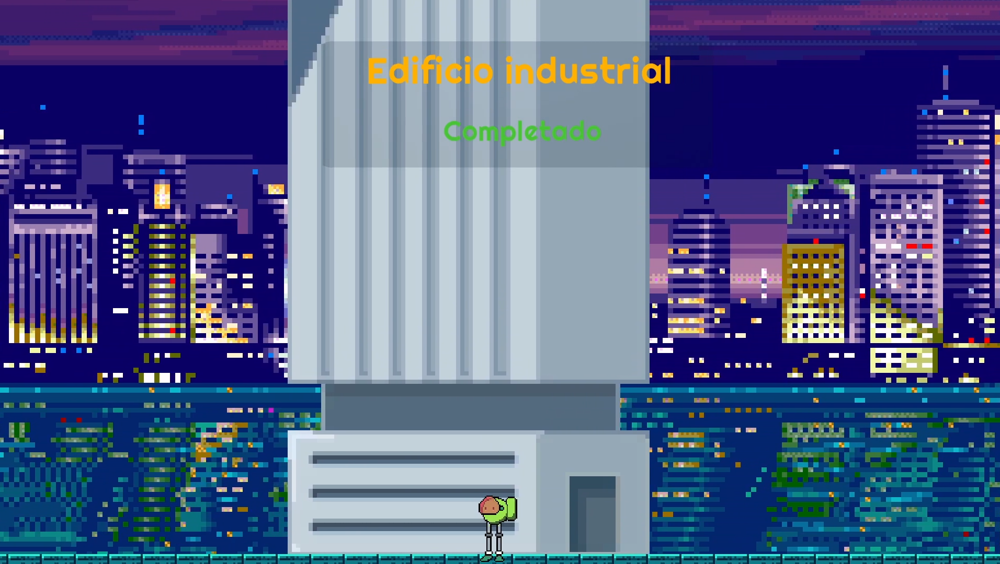
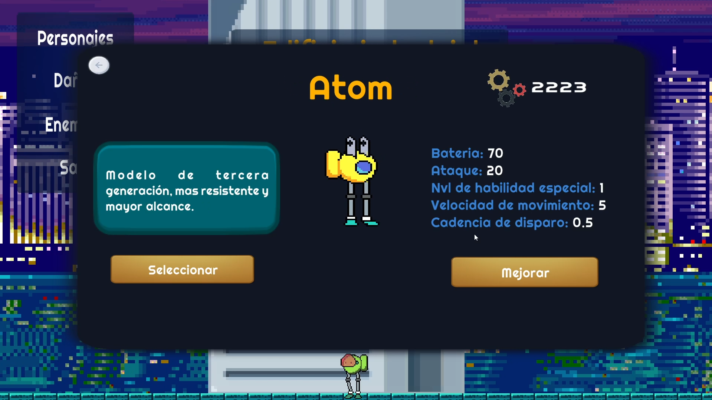
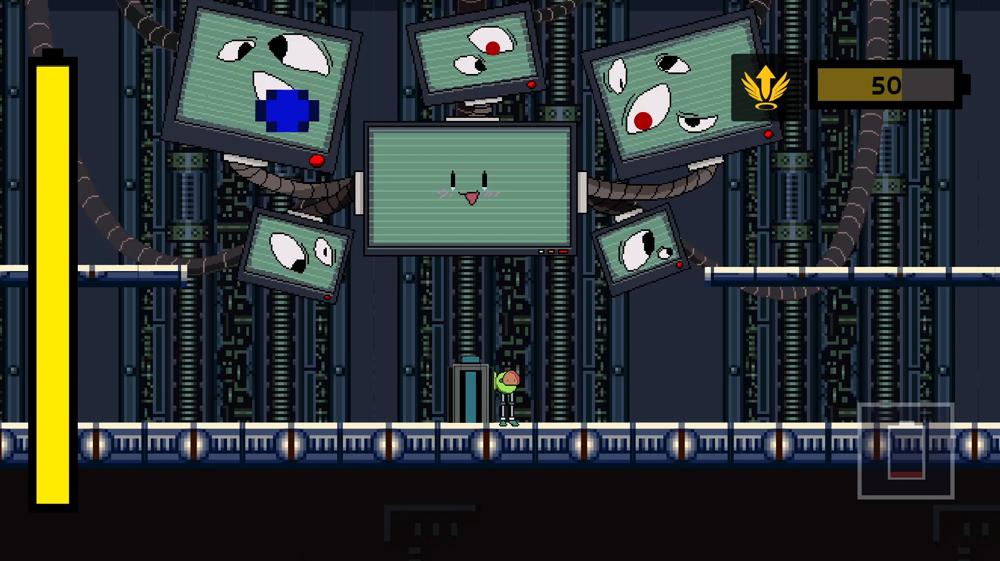
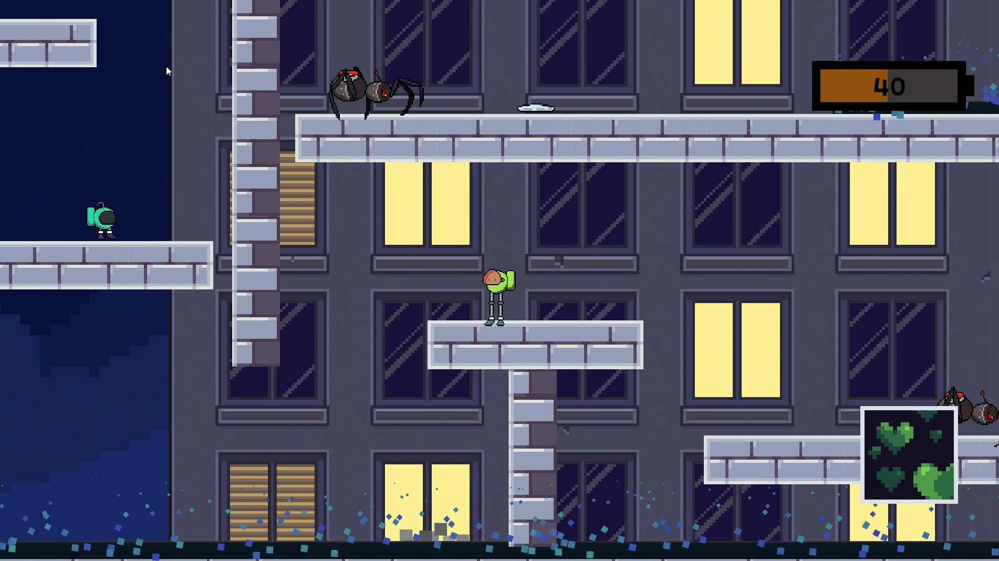
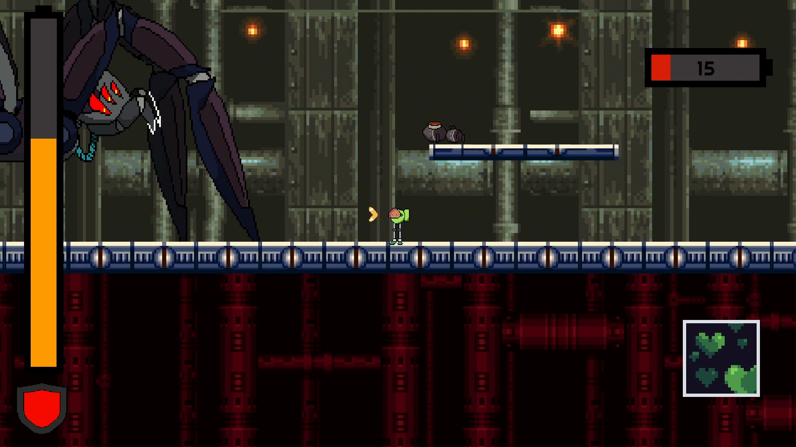
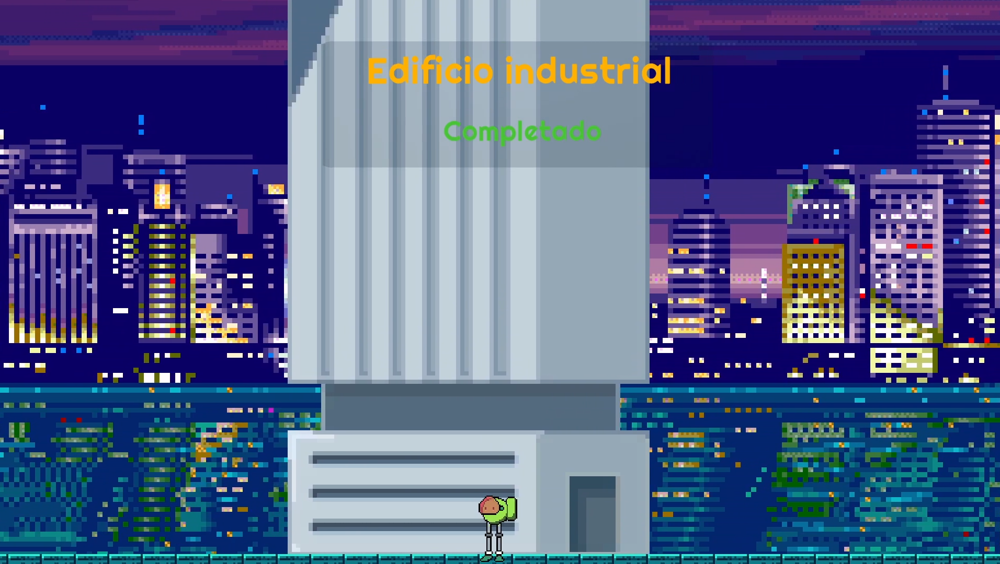
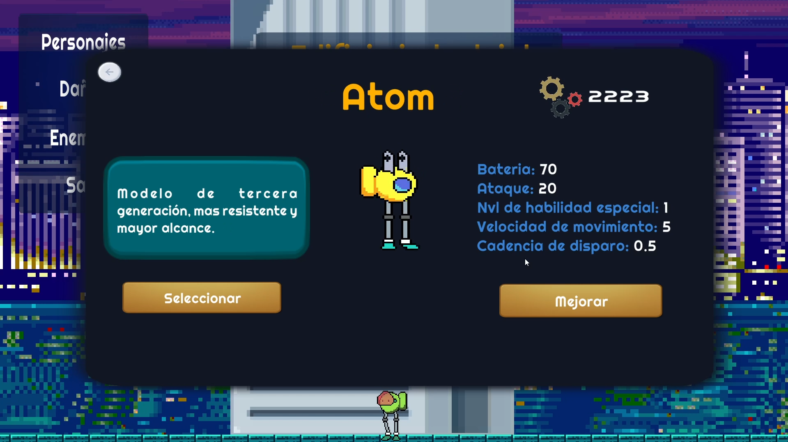
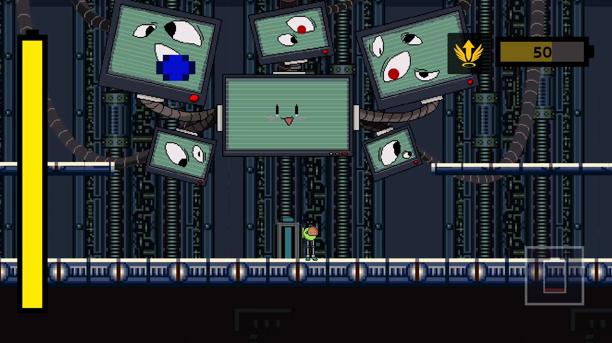
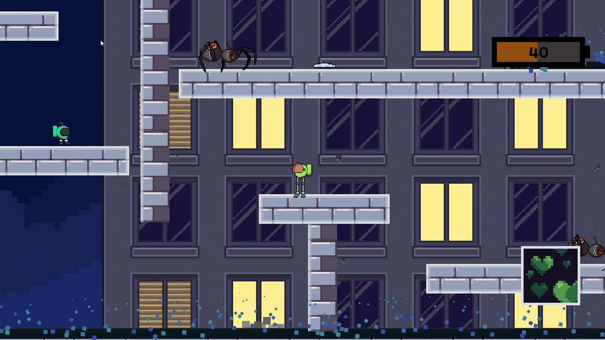
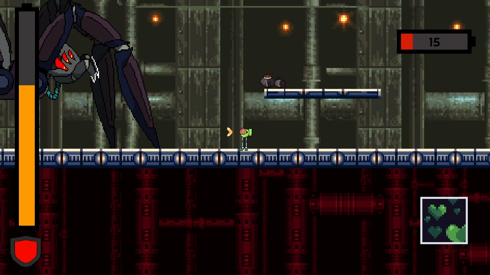
For my high school graduation project, I created "Fix-it," a 2D platform video game using Unity and C# from December 2020 to June 2021.
I designed and implemented the character upgrade screen, ensuring synchronized with the player's progress in real-time. This feature allowed players to enhance their characters as they advanced through the game.
Additionally, I crafted enemy behaviors, including movement patterns, attack patterns, and player detection mechanisms.
I also created the layouts for all stages, aligning them with the thematic concepts of each level.
I developed movement and attack scripts for the player characters, integrating different special attacks for each playable character.
I designed and coded multiple mini-games requiring coordinated keyboard inputs and featuring randomly generated object positions or patterns.
Lastly, I implemented a binary file-based player data storage system, ensuring that player progress was saved and accessible.
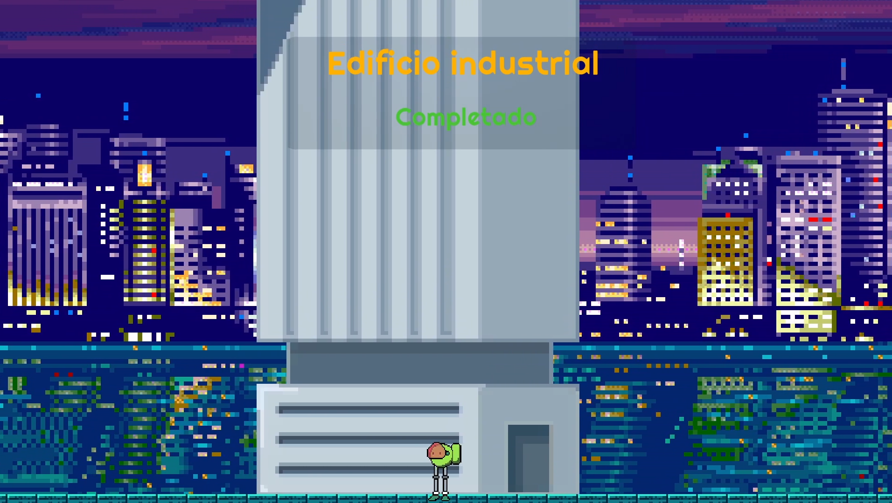
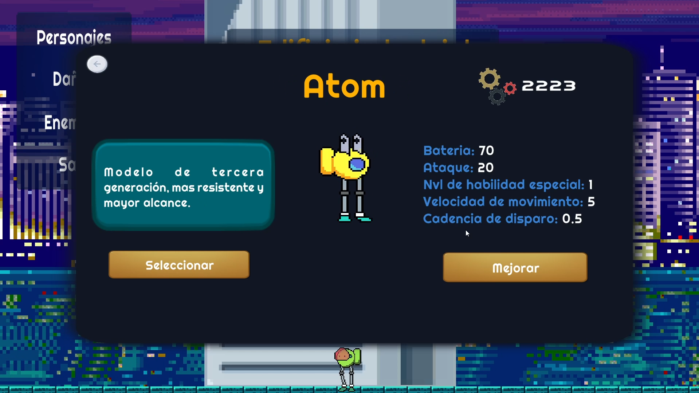
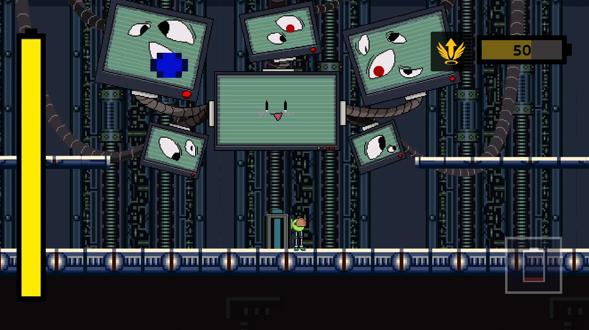
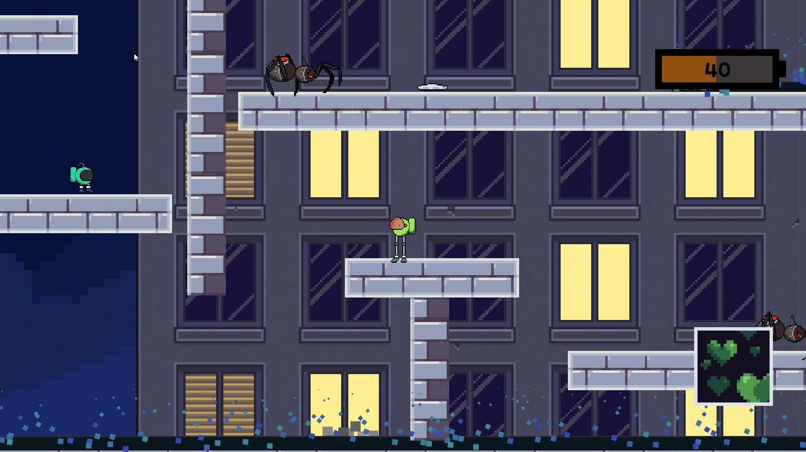
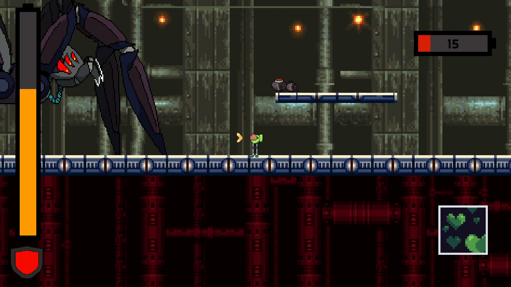
"Fix-it" is a 2D platformer game inspired by the Mega Man saga. In this game, you play as a robot responsible for repairing buildings. When robots begin destroying buildings without warning, it becomes your duty to stop them, repair the buildings, and uncover the reason behind their actions.